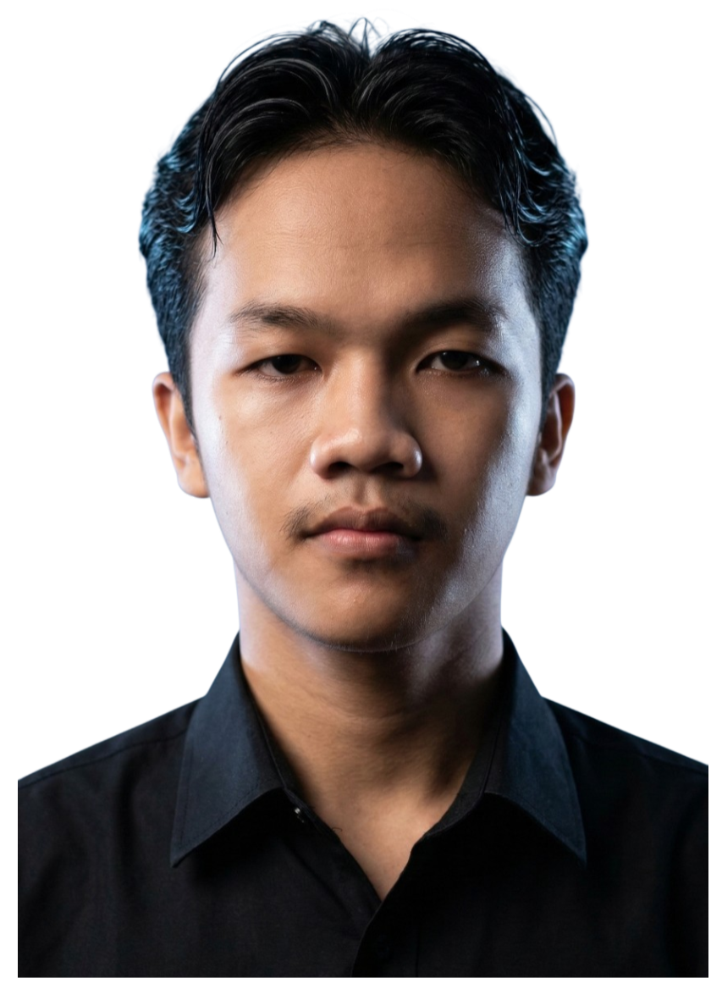

Halo, saya Davin Valerian.
Mahasiswa yang aktif mengembangkan diri melalui pengalaman nyata di bidang kepemimpinan organisasi dan bisnis.
Melalui keterlibatan di organisasi, salah satunya sebagai Sekretaris BPH UKM KSPM dan ketua program kerja, saya terbiasa mengelola tanggung jawab, berkoordinasi dalam tim, serta menjalankan manajemen kegiatan secara efektif.
Di samping itu, saya juga mengelola bisnis mandiri bernama brownie.ind selama lebih dari 4 tahun. Kedua dunia ini mengajarkan saya bahwa pertumbuhan yang nyata selalu dibangun di atas kedisiplinan, konsistensi, dan kemauan untuk terus belajar.
Penelitian MBKM yang saat ini sedang berjalan. Proyek ini berfokus pada penerapan Explainable AI (XAI) menggunakan metode Gradient-weighted Class Activation Mapping (Grad-CAM) untuk mengevaluasi dan memvisualisasikan bagaimana model Deep Learning mengambil keputusan dalam mengklasifikasikan tumor otak melalui citra MRI. Tujuan utamanya adalah untuk memberikan interpretasi yang transparan dan dapat dipercaya pada model AI medis.
Status: Sedang Berjalan (In Progress)
Penelitian ini membahas perbandingan performa beberapa model deep learning dalam mengenali ekspresi wajah senang (happy) dan sedih (sad) menggunakan dataset FER2013. Model yang diuji meliputi VGG16, ResNet50, dan MobileNetV2 untuk mengetahui model dengan akurasi terbaik dalam klasifikasi ekspresi wajah. Hasil penelitian menunjukkan bahwa VGG16 memiliki performa terbaik dengan akurasi pengujian sebesar 85.14%.
Full Paper SEMNAS 2025
Proyek ini merupakan pengembangan website sederhana untuk brand brownie.ind, yang bertujuan menampilkan informasi produk, memperkuat branding usaha, serta memperkenalkan bisnis secara digital kepada pelanggan. Website ini dirancang dengan tampilan yang sederhana dan responsif sehingga dapat diakses dengan baik melalui berbagai perangkat.
Operasional, pemasaran, keuangan, pengembangan produk & quality control.
Administrasi, laporan kegiatan, dokumentasi resmi, serta koordinasi internal.
Perencanaan konsep, koordinasi tim, timeline, hingga evaluasi kegiatan.
Membangun kemandirian finansial dan belajar praktik bisnis nyata melalui pendirian serta pengelolaan brownie.ind secara konsisten selama lebih dari 4 tahun.
Mengasah *soft skill* dan tanggung jawab melalui KSPM. Dipercaya menjadi Sekretaris BPH serta memimpin tim sebagai Ketua Program Kerja.
Mendalami metode *Deep Learning* untuk riset klasifikasi wajah, serta membangun kapabilitas *Web Development* untuk memperluas jangkauan digital bisnis.
Saat ini aktif menjalankan riset MBKM mengenai Explainable AI untuk citra medis (MRI Tumor Otak), sembari menggabungkan pengalaman manajerial bisnis dan organisasi untuk mulai berkontribusi secara profesional.
Tertarik untuk berkolaborasi atau sekadar berdiskusi? Jangan ragu untuk menghubungi saya melalui email atau platform lainnya.
davinvalerian9g@gmail.com
Kirim Email Sekarang